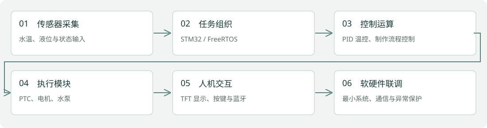
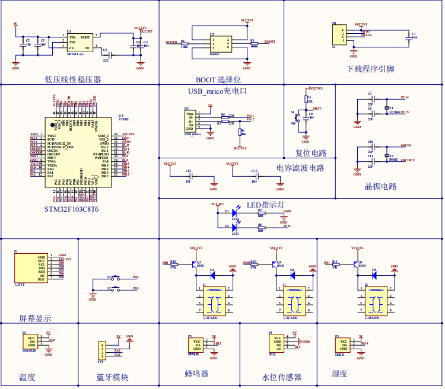

本科毕业设计 · 独立完成 · 2024.09—2025.05
STM32 智能饮品制作系统
温度采集、PID 控制、电机与水泵驱动，以及本地显示和蓝牙交互。
STM32 / FreeRTOS / PID / PWM / 蓝牙 / 硬件调试

业务问题与项目目标
将饮品制作中的温控、补水与搅拌步骤组织为嵌入式控制流程，完成软硬件模块联调。
个人负责内容
以本科毕业设计及已有项目记录为依据，保留 STM32 主控、驱动接口、温控与电机控制、显示及蓝牙通信的个人开发经历。
系统架构与流程
STM32F103C8T6 → 传感器采集 / FreeRTOS 任务 → PID 温控与 PTC 加热、L298N PWM 电机、继电器水泵 → TFT 本地显示与 HC-06 蓝牙交互。

实现细节
- 温度与水位采集：论文正文水温传感器为 DS18B20，水位通过 ADC 读取；不将数字温度采集写成 ADC 直接测温。
- 保留 FreeRTOS 任务组织、PID 温控、PWM 电机调速与水泵控制等技术背景。
- 保留 1.3 寸 TFT、HC-06 蓝牙、最小系统设计和软硬件调试经历。

技术选择与调试边界
FreeRTOS 组织不同控制任务，PID 对温度反馈作控制，PWM 驱动电机，蓝牙和 TFT 提供交互入口。现有论文和原理图能核对模块连接；由于缺少完整固件与原始测量记录，尚不能定位具体控制参数或复现温控性能。后续验证需补齐固件、参数和连续采样日志。
运行证据与核对结果
已检查毕业设计论文、最小系统原理图及设备实物图；这些资料支持本页所述的项目架构。
当前边界与后续工作
当前仓库未包含完整 STM32 固件。论文部分性能数据缺乏原始测量记录且摘要与正文有差异，本页不使用 99.2%、节能百分比等量化性能承诺。